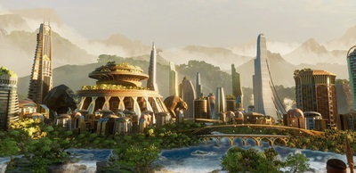
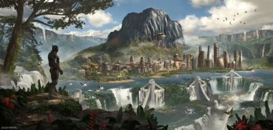
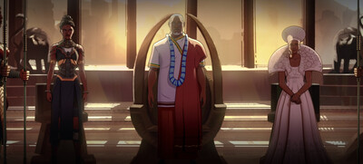
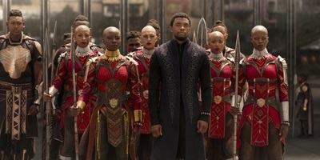
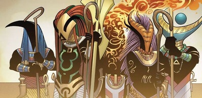
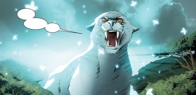

História
A origem do país remonta há mais de 10.000 anos.
Nessa época, um grande meteoro feito de um material desconhecido caiu na África.
Bashenga, o líder de uma das tribos da região explorou o local da queda do meteoro e
descobriu que aquela pedra vinda dos céus era feita de um mineral nunca antes visto por ali.
Era vibranium, o metal mais raro do planeta.
As pessoas da tribo de Bashenga passaram a usar o novo metal na confecção de suas armas.
Entretanto, o metal também emitia uma radiação única,
que transformou alguns dos membros da tribo em monstros fora de controle.
Bashenga então orou para sua deusa pantera pedindo forças para conter aqueles monstros.
Foi dessa forma que Bashenga se tornou o primeiro Pantera Negra, fez uma aliança com outras tribos,
derrotou os monstros e fundou Wakanda.


Localização
Wakanda é um pequeno país localizado no leste africano.
Faz fronteira com outros países menores como Mohannda, Niganda, Azania e Canaan (todos fictícios),
e está perto de países maiores e reais como o Quênia, Uganda e Somália.
Parte do Lago Vitória, chamado de Nyanza na língua local, está situado dentro de território wakandiano.
Wakanda possui uma grande biodiversidade,
apresentando tanto ambientes de savana quanto de floresta fechada em seu território.
Um ponto de interesse de Wakanda é o monte Mena Ngai,
a montanha que abriga os depósitos de Vibranium do país.
Política
Todos os aspectos da sociedade de Wakanda possui influência direta do estilo de vida tribal que tinham antigamente,
e o mesmo é válido para o governo. O poder é centralizado na figura do Pantera Negra,
que age não só como um líder tribal ou rei, mas também é o líder religioso e chefe comandante.
É seu dever manter as 18 tribos que compõe a sociedade de Wakanda em paz e união,
bem como garantir o bem estar de todos.
Desde a fundação de Wakanda, o titulo de Pantera Negra tem sido passado de geração em geração pela família de Beshanga.
Sempre que o rei morre, seu filho assume o posto e as vestes de pantera. Além disso,
as memórias e conhecimentos dos antepassados também são transferidos para o sucessor através do culto à pantera.
Isso garante que Wakanda sempre tenha um líder mais sábio e competente que o anterior.
Apesar de ser hereditário, qualquer cidadão de Wakanda pode desafiar o líder do
país em um combate pelo direito de governar.
Ao longo da história, Wakanda sempre manteve uma política internacional de isolamento,
jamais invade ou provoca qualquer outra nação, e só entrava em contato quando extremamente necessário.
Apesar disso, caso fosse invadida, respondia imediatamente ao ataque com força e sem piedade.
Nos últimos anos, Wakanda se abriu mais para o resto do mundo e atualmente é uma das nações integrantes da ONU.


Economia
Vibranium é o maior recurso do país e razão de Wakanda ser um dos países mais ricos e estáveis do planeta.
O grama desse mineral é vendido a $10,000. Por Wakanda possuir a maior reserva de Vibranium do planeta,
o país praticamente regula o preço do mineral e escolhe seus clientes. O país também é rico em reservas de urânio,
carvão e diamantes.
Educação é altamente valorizada e incentivada em Wakanda.
Possui uma das menores taxas de analfabetismo do planeta, além de um grande sistema de educação.
Todas as crianças do país são obrigadas a cumprir um ciclo básico de educação de 11 anos em escolas públicas por todo o país.
Após isso, podem escolher entre já ingressar no mercado ou em alguma universidade.
Medicina também é um outro aspecto bastante avançado na sociedade wakandiana.
Todos os cidadãos possuem acesso igualitário ao sistema público de saúde de Wakanda.
O país possui uma das maiores expectativas de vida do planeta.
Em adição a isso, o país também possui uma cura para o câncer, mas não a divide com o resto do mundo.
Essa decisão polêmica se deve ao fato de Wakanda não acreditar que o resto do mundo realmente esteja preocupado com a saúde da população.
Pois, se assim fosse, investiriam menos em guerras e na industria tabagista, e mais em medicina.
Tecnologia
A tecnologia de Wakanda é um caso único. Devido ao extremo isolamento e a grande reserva de vibranium,
a tecnologia do país se desenvolveu independente do resto do mundo.
Possui uma indústria aeronáutica e de computação bastante desenvolvidos,
muito mais avançados em comparação com o resto do mundo.
Os computadores de Wakanda são tão diferentes do resto do mundo que é quase impossível hackear.
Um exemplo de uma tecnologia única de Wakanda são as Contas Kimoyo.
Por mais que pareçam apenas uma pulseira à primeira vista, trata-se de um poderoso computador pessoal.
Cada uma das contas de pulseira possui uma funcionalidade, totalmente customizável para o estilo de vida de cada um.
Algumas funções são: monitoramento da saúde do indivíduo, comunicação,holografia de vídeos e textos e acesso ao banco de dados de Wakanda.
Religião
Apesar de Wakanda ser uma sociedade extremamente avançada tecnologicamente,
não perdeu os laços com sua cultura do passado.
Por isso a religião ainda é um aspecto muito presente na vida de seus cidadãos.
A religião principal de Wakanda se apresenta na forma de diferentes cultos a animais.
A maioria desses animais são derivados da aparência dos deuses do antigo Egito.
O principal, o Culto à Pantera, adora a deusa Bast e foi fundado por Bashenga, junto com Wakanda.
Alguns outros animais também cultuado são o leão, o crocodilo, o gorila, e a hiena.

